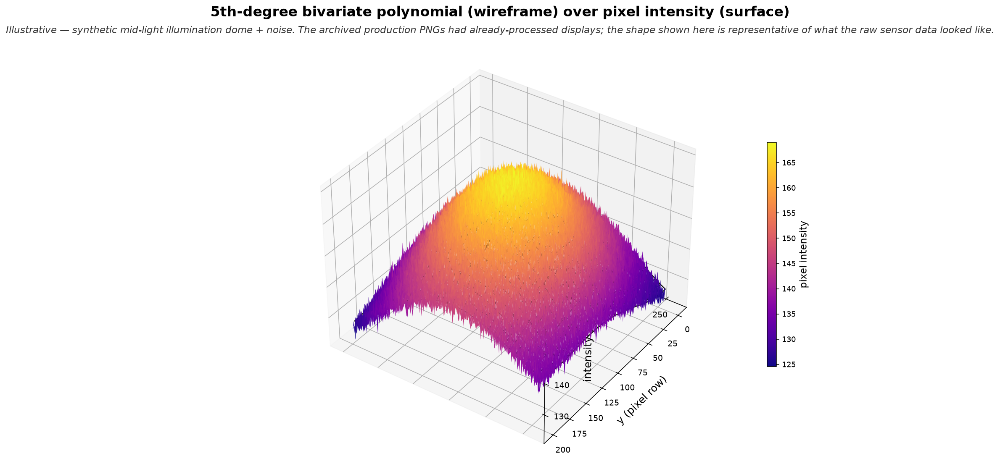

5th-degree bivariate polynomial (wireframe) fit to the pixel intensity surface. Where the wireframe rides above or below the surface, the residual is nonzero — that's where defects hide. Illustrative — synthetic mid-light illumination dome + realistic sensor noise, representative of the raw sensor data the archived production PNGs no longer retain.

This is the visualization I used to use to explain the method — the polynomial fit as a wireframe riding on the pixel intensity surface. The audience gets the whole method in one image.
Speaker cue:
"Think about the pixel intensities across a die at mid-light as a surface — it looks like this. There's a dome shape from the imaging system's illumination profile with sensor noise on top. The wireframe you see is the 5th-degree bivariate polynomial I fit through that surface. Where the wireframe rides above the actual pixels, or dips below them, the residual is nonzero. That's where defects would live — after iterative outlier suppression converges."
PRE-PROCESSING NOTES (say if the room asks about robustness):
"Two things I did in production that aren't shown in this abstract picture. First, I contrast-enhanced the pixel intensities before fitting so the dome variation was strong enough to model. Second, I fit on an over-extended domain — beyond the actual die crop — and then cropped back to the analysis region. That let the polynomial's edge behavior stabilize on data I was going to throw away, rather than skewing the interior fit."
IMPORTANT DISCLAIMER (say once):
"This visualization is illustrative — a synthetic dome and noise. The archived production PNGs I have from ON Semi are already-processed 8-bit displays whose interior pixels are saturated at 255, so the raw dome doesn't survive in them. What you're looking at is representative of what the sensor data looked like at capture time, before display processing."
Q&A CUE: "Questions on the fit surface, the edge handling, or how the residual feeds the clustering step?"